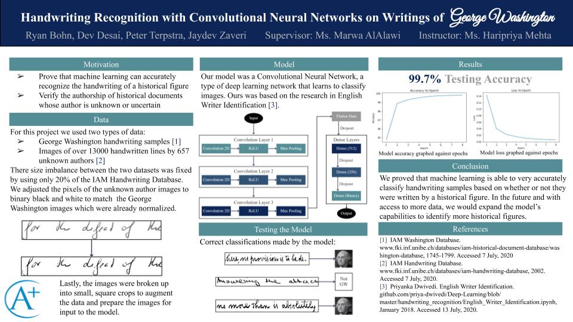

Handwriting style is a characteristic unique to every human being, and as such it is an important identifier to distinguish one person's writing from another person's writing. However it can be difficult for someone without experience to distinguish between handwriting styles without the help of artificial intelligence. This authorship verification project implements a Convolutional Neural Network (CNN), in conjunction with binary pixel normalization and random image sampling, to solve the problem of determining whether or not a particular person authored a written document. The model was trained to compare the handwriting of George Washington to the unique and diverse handwriting styles of many other individuals. In summary, the model performed well with a test accuracy of 99.7% and proved that CNNs can be used for the binary mapping of handwriting samples to authorship.
George Washington:
Unknown Author:

